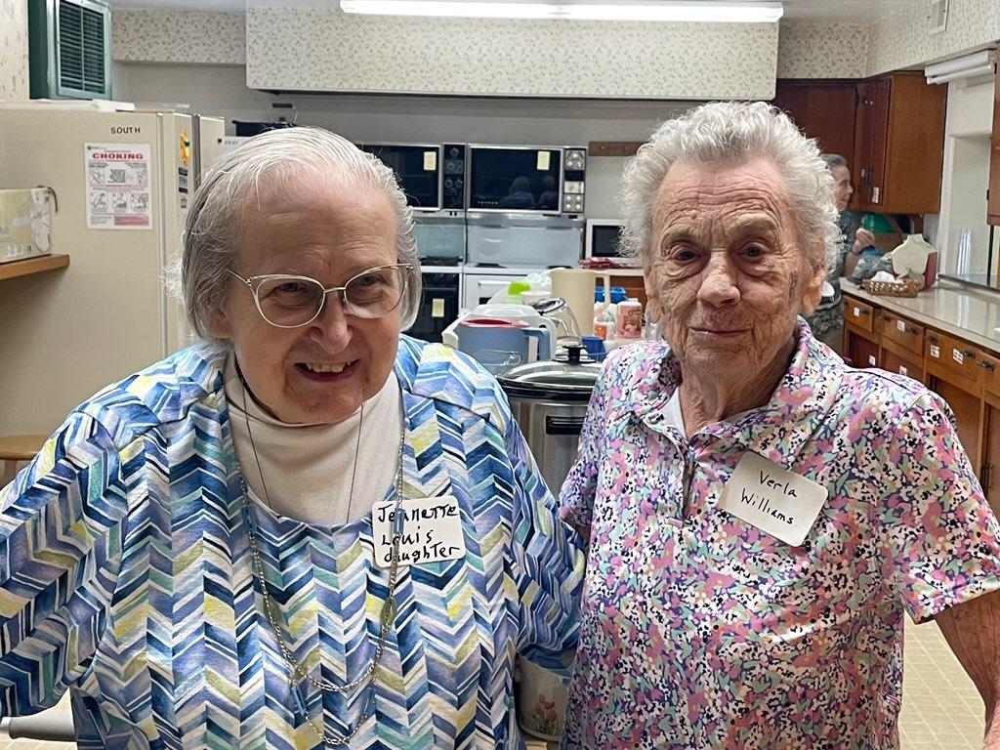
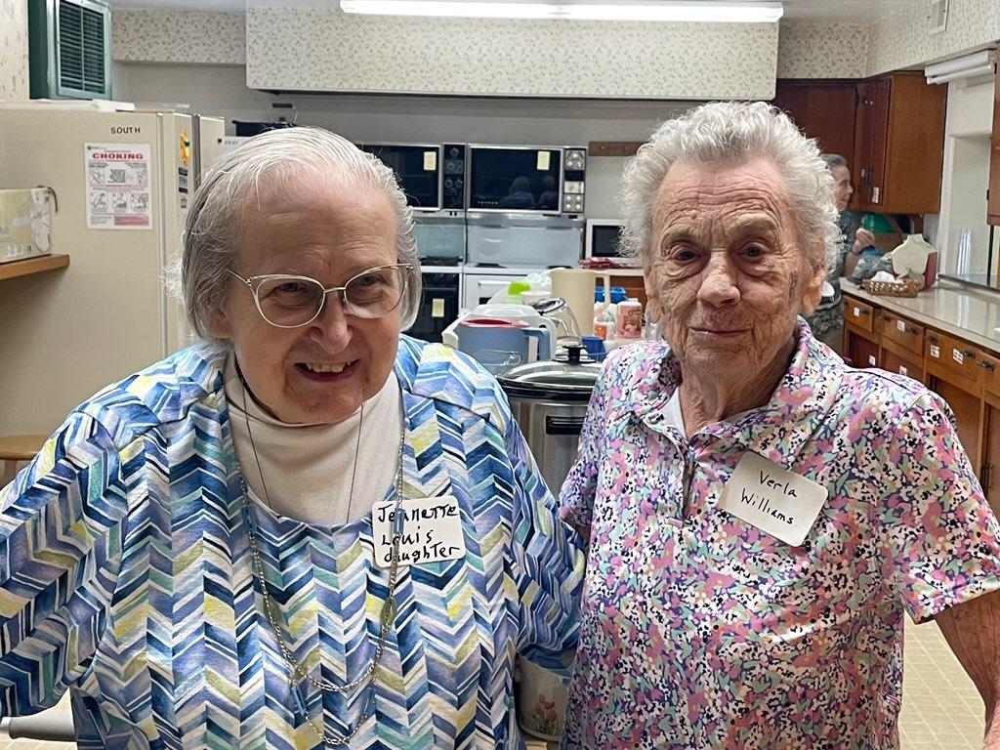

Yes, Wissmiller Road is real!
Click here to see it on a map.
wissmiller.net |
Paul Wissmiller |

|
Yes, Wissmiller Road is real! Click here to see it on a map. |
|
|
|||
|
100th Annual Wissmiller-Fink Reunion June 25, 2023We gathered at the First Presbyterian Church in Gibson City on June 25th for the 100th annual Wissmiller Reunion. Julie Wissmiller was a great help in organizing the reunion this year, tracking down wayward family members and sending very nice invitation cards to all. Thanks, Julie! We had 43 attendees, a record number in recent years, and enjoyed conversation and comradery, along with great home style food. Aaron Wissmiller shared some books and pictures about our shared heritage in central Illinois. After the meal, we held the family business meeting.
Reunion Meeting Minutes, taken by Jeanette, transcribed by JuliePresident Aaron Wissmiller called the meeting to order.Secretary Jeanette Hensely, gave a report of the 2022 Reunion minutes. Family Introductions where done. Oldest person in Attendance: Verla Mae “ Schatzie” Williams - 97 Years Old - Jeanette presented her with a bouquet of flowers. Youngest person in attendance: Walter Paul Kenzie - 18 Months Old Person who traveled the farthest: Jim Wissmiller - 1700 miles from Arizona Marriages: None Births: Stenson Hamm - May 22, 2023 to Caleb and Catherine Deaths: Jerald “Tud” Wissmiller - August 17, 2022 Bryon Wissmiller - December 1, 2022 Evan Wissmiller - January 11, 2023 Mary (Wissmiller) Rhoda - May 11, 2023
Old Business:
New Business:
Donations were taken. $230.00 was collected. We reimbursed Julie W. $100.00 for stamps and materials for the beautiful invitations she sent. We voted to donate $100.00 to the church. Jeanette Hensley accepted the church donation and will pass it on to the pastor. The ending balance is $160.
We voted to have the 101st Wissmiller Fink Reunion on June 23, 2024 at the First Presbyterian Church, Gibson City, IL.
Officers were elected for 2023/2024.
The meeting was adjourned and group pictures were taken with the banner.
More Pictures

 

|
|
 Powered by GitHub Pages
Powered by GitHub Pages